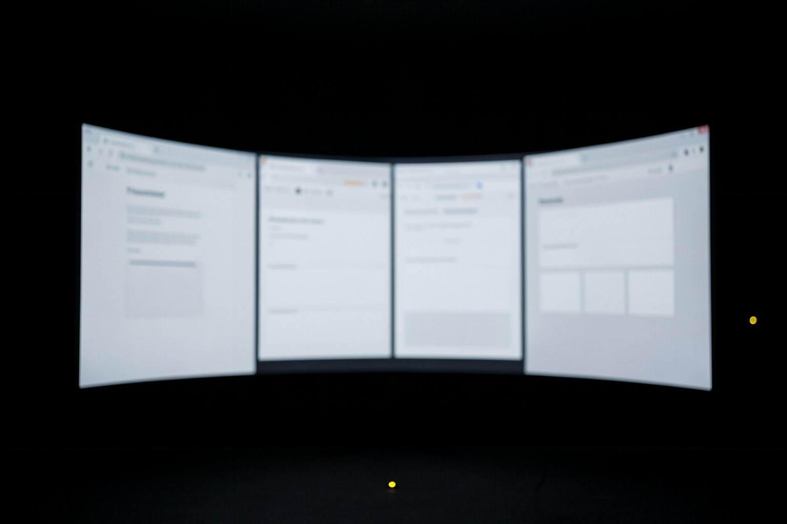

E1 · Kit ready
10 minRun both blocks. If a piece is missing, its line starts with "falta:" and says what to do.
Done when: node versoes.mjs → kit pronto: 4 de 4 peças obrigatórias and saída: 0.
Lesson 1 · 15 min
Browser agent has become several different things: a model that looks at the screen, an extension in your Chrome, a whole browser with an agent inside, and tools that give a browser to Claude Code or Codex. In this lesson you separate the four families, read each one's status with a date, and get the course kit ready.
Start the lesson
Goal: place computer use, extensions, browsers with an agent, and dev tools, with a dated status, and get the kit ready.
Click each block.
All four reach the same HTML. What you test with the fourth holds, in large part, for the other three.
Three questions before you believe it.
A post from the maker, the documentation, or the official repository counts as fact. A press article or an aggregator counts as "reported by."
Example: Anthropic's post from 11/24/2025 is a primary source; the Atlas launch date, here, came only from press coverage.
Write the date next to the status: "beta on the Max plan on 11/24/2025," not "it's in beta." In six months the sentence without a date becomes a lie.
A package version is status too: the kit pins @playwright/mcp 0.0.83 (09/28/2026) and chrome-devtools-mcp 1.10.1 (09/23/2026).
An extension or a browser with an agent runs on someone's account and uses up a subscription. The dev tools run locally, against 127.0.0.1, with no model at all if you want.
That is why the course rehearses everything with them and leaves the real agent for an optional step.
A browser agent only against the kit's page or against a site of your own. No real logins, purchases, or third-party forms.
Installs the pinned versions and checks the pieces. The versoes.mjs script calls no network and no model.
[ -d ~/projetos/formacao-webmcp-navegador-v72 ] || git clone -q https://github.com/inematds/formacao-webmcp-navegador-v72 ~/projetos/formacao-webmcp-navegador-v72 cd ~/projetos/formacao-webmcp-navegador-v72/kit npm ci --no-audit --no-fund && npx playwright install chromium; echo "saída: $?"
cd ~/projetos/formacao-webmcp-navegador-v72/kit node versoes.mjs; echo "saída: $?"
node 24.13.0 playwright 1.64.0 · Chromium 156.0.8078.4 @playwright/mcp 0.0.83 chrome-devtools-mcp 1.10.1 @modelcontextprotocol/sdk 1.32.1 (cliente de ensaio, sem modelo) claude (opcional) 2.1.303 (Claude Code) codex (opcional) codex-cli 0.163.0 kit pronto: 4 de 4 peças obrigatórias saída: 0
Four required pieces: Node 20.19 or newer (chrome-devtools-mcp requires it), Playwright with its own Chromium, Playwright MCP, and Chrome DevTools MCP. Claude Code and Codex show up as optional: the whole course runs without them.
added 101 packages in 2s saída: 0
npm ci installs exactly what is in package-lock.json. The first time, npx playwright install chromium downloads Playwright's Chromium (a few hundred MB); after that, it prints nothing.
The kit on your machine and your map.
Run both blocks. If a piece is missing, its line starts with "falta:" and says what to do.
Done when: node versoes.mjs → kit pronto: 4 de 4 peças obrigatórias and saída: 0.
Create mapa-agentes.md with three browser agents that you or your clients use, one line per agent: family | agent | status | source | date. A status without a source becomes "reported by."
Done when: grep -c "|" mapa-agentes.md → 3 or more, and every line has a date.
Question 1 of 4
Which agent family does this course use to test the site, and why?skill
Question 2 of 4
You read in an article that a browser with an agent came to Android in August. How do you write that on your map?
Question 3 of 4
What did Anthropic say on 11/24/2025 about browser agents and prompt injection?skill
Question 4 of 4
Why does the kit pin @playwright/mcp 0.0.83 instead of using the latest version?
Pick an option. The explanation appears after you answer.